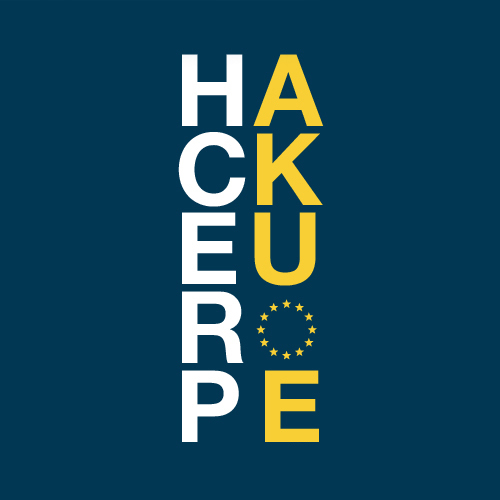
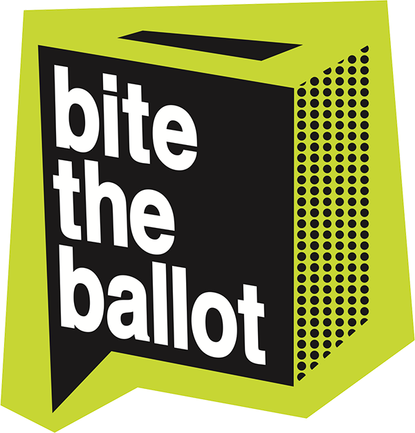
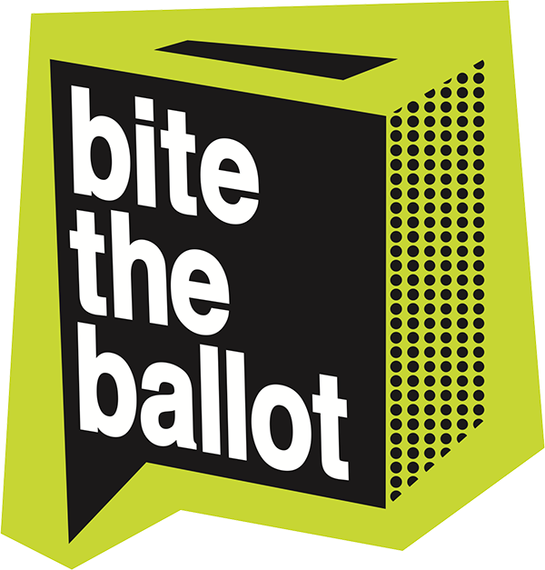

on april 23 and 24 2016 at Runway East, central London

brought to you by

 

People under the age of 25 have the lowest registration rate and turnout of any demographic. The recent move to individual electoral registration has been highlighted by both the Electoral Commission and the Electoral Reform Society as likely to disproportionately disenfranchise young people and students.
In a little over three months the European referendum will take place, a vote that will hugely affect this generation's future. As a national vote, the turnout of students and young people will be all the more important. Unlike at a General Election, in a referendum,without geographic distribution, every vote counts.
In June 2016 this generation will have a chance to have its say. Yet, if you are an 18 year old who has never voted, doesn't respond to letters or, even have a landline phone, you are far less likely to realise this. Research tells us that normal contact methods consistently fail to reach you. Young people aren't failing to vote because they don't care. They're failing to vote even though they care; because we don't reach them and show them how.
We want to change this, and need your help to make it happen at an event on the 23rd and 24th of April in the City of London. Interactive micro-campaigns are much more effective than leaflets here, let's use our skills to hack the problem.

HackEurope is an informal group who love data, coding and civic engagement, and that think the best way we can contribute to this vital vote is to apply our skills. We've teamed up with London First to organise a hack weekend in London with the theme of engaging 18-25 year olds in registering and turning out to vote.
Naomi Smith is Europe Director at the business group, London First. She is a Chartered Management accountant, holds a BA Hons in Economics and Politics, and a postgraduate degree in Mandarin Chinese and International Business. She began her career as an auditor with Arthur Andersen, later moving to Deloitte as a Senior Associate in Corporation Tax. Following that she worked in finance in Shanghai before moving to CIMA where she became Global Head of Public Policy. In 2010 she contested the Cities of London and Westminster seat for the Liberal Democrats at the General Election and was Chair of the Social Liberal Forum from 2012-2016. Her interests include current affairs, watching cute animal videos on YouTube, and flirting with veganism.
Matthew Wilkes is a freelance Python developer based in Bristol and founder of HackEurope.
He works for a range of clients, from
small charities to multinational accounting companies. He has worked on many participatory governance
and voter engagement projects for UK and international government clients, as well as the usual range
of websites, e-commerce, APIs and intranets.
He is a long-term contributor to open source, both as a developer and community leader. He was the
security team lead for Plone for 4 years and has been an active mentor in Google's Summer of Code
programme since 2008.
Nigel Smith is a web developer who has worked with a variety of UK and international charities, political campaigns, and advocacy groups to deliver campaign web sites, interesting and interactive apps and tools. He enjoys working with Python, Javascript, and other languages across frameworks like Django, React, and EmberJS. He is a certified NationBuilder architect and has used the framework to build successful, membership-driven sites and campaigns. Greatly concerned about the impact of the European Referendum on the UK, Nigel is a founder of HackEurope.